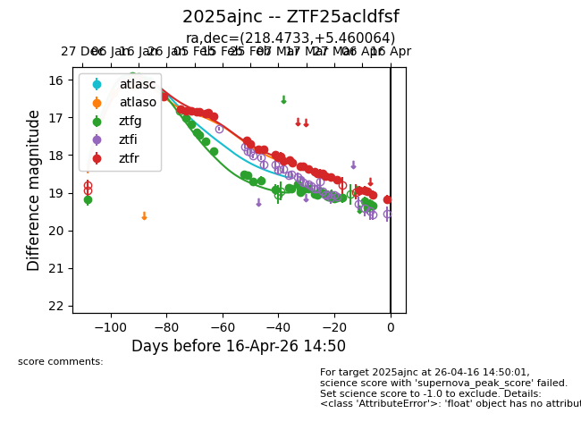
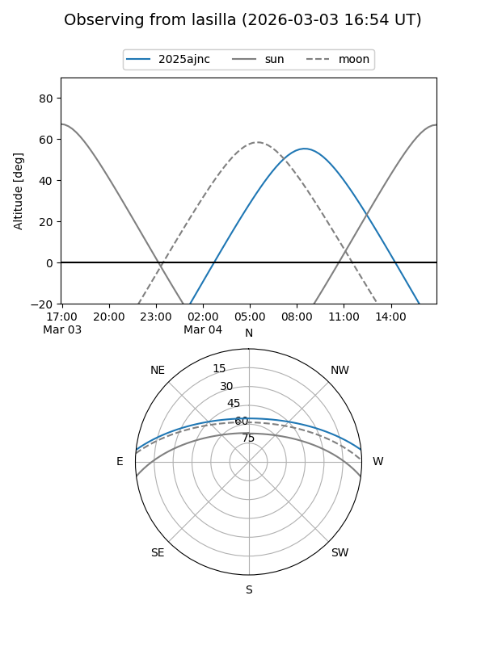
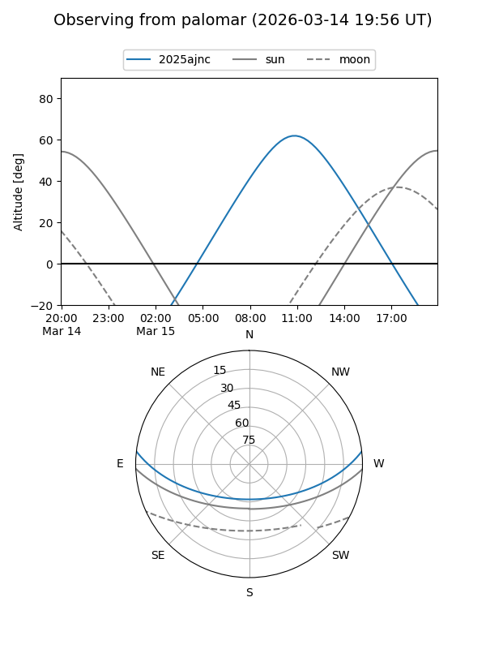
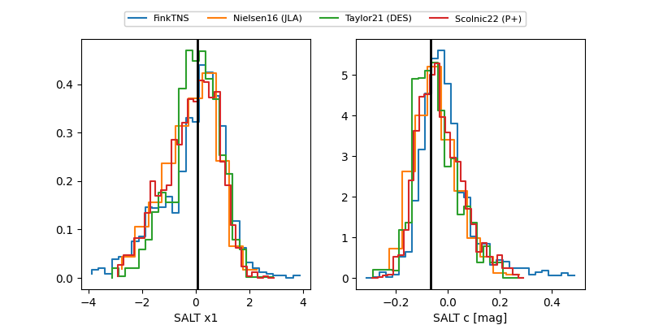

2025ajnc
Target 2025ajnc at 2026-01-23 17:26
Aliases and brokers:
FINK: link
Lasair: link
ALeRCE: link
TNS: link
YSE: link
alt names
ZTF25acldfsf (ztf,fink_ztf)
2025ajnc (tns,yse)
ATLAS26aab (atlas)
Coordinates:
equatorial (ra, dec) = 218.4733,+5.46010
equatorial (HMS+DMS) = 14:33:53.59,+05:27:36.34
galactic (l, b) = (355.9032,+57.38106)
Flags:
confirmed ia
Photometry:
last atlasc=16.02, atlaso=16.16, ztfg=16.05, ztfr=16.10
1 atlasc, 3 atlaso, 5 ztfg, 2 ztfr detections
Lightcurve

Visibility


Additional plots
